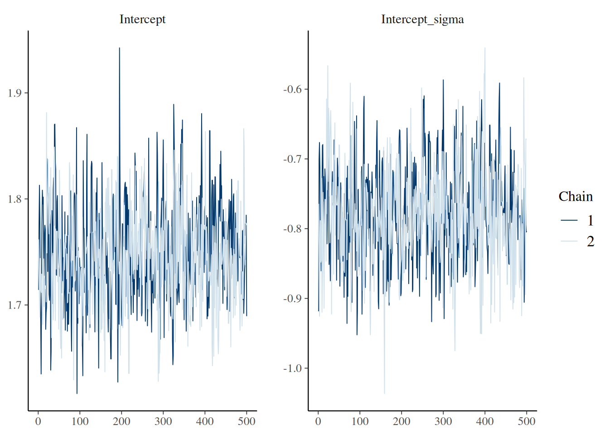

Here we provide tips for working with the epidist package, and answers to frequently asked questions.
If you have a question about using the package, please create an issue.
We will endeavour to respond promptly!
The code block below facilitates reproduction of this script.
library(epidist)
library(brms)
library(dplyr)
library(ggplot2)
library(scales)
library(tidyr)
library(tidybayes)
set.seed(1)
meanlog <- 1.8
sdlog <- 0.5
obs_time <- 25
sample_size <- 200
obs_cens_trunc_samp <- simulate_gillespie(seed = 101) |>
simulate_secondary(
meanlog = meanlog,
sdlog = sdlog
) |>
mutate(
ptime_lwr = floor(.data$ptime),
ptime_upr = .data$ptime_lwr + 1,
stime_lwr = floor(.data$stime),
stime_upr = .data$stime_lwr + 1,
obs_time = obs_time
) |>
filter(.data$stime_upr <= .data$obs_time) |>
slice_sample(n = sample_size, replace = FALSE)
linelist_data <- as_epidist_linelist_data(
obs_cens_trunc_samp$ptime_lwr,
obs_cens_trunc_samp$ptime_upr,
obs_cens_trunc_samp$stime_lwr,
obs_cens_trunc_samp$stime_upr,
obs_time = obs_cens_trunc_samp$obs_time
)
data <- as_epidist_marginal_model(linelist_data)
fit <- epidist(
data,
formula = mu ~ 1,
seed = 1,
chains = 2,
cores = 2,
refresh = ifelse(interactive(), 250, 0),
backend = "cmdstanr"
)I would like to work with the samples output
The output of a call to epidist is compatible with typical Stan workflows.
We recommend use of the posterior package for working with samples from MCMC or other sampling algorithms.
For example, the function posterior::as_draws_df() may be used to obtain a dataframe of MCMC draws for specified parameters.
library(posterior)
draws <- as_draws_df(fit, variable = c("Intercept", "Intercept_sigma"))
head(draws)## # A draws_df: 6 iterations, 1 chains, and 2 variables
## Intercept Intercept_sigma
## 1 1.7 -0.78
## 2 1.7 -0.84
## 3 1.7 -0.80
## 4 1.7 -0.78
## 5 1.8 -0.79
## 6 1.8 -0.77
## # ... hidden reserved variables {'.chain', '.iteration', '.draw'}How can I assess whether sampling has converged?
The output of a call to epidist is compatible with typical Stan workflows.
We recommend use of the bayesplot package for sampling diagnostic plots.
For example, the function bayesplot::mcmc_trace() can be used to produce traceplots for specified parameters.
library(bayesplot)
mcmc_trace(fit, pars = c("Intercept", "Intercept_sigma"))
We also provide a function epidist_diagnostics() which can be used to obtain common diagnostics used to assess the quality of a fitted model.
epidist_diagnostics(fit)## # A tibble: 1 × 8
## time samples max_rhat divergent_transitions per_divergent_transitions
## <dbl> <dbl> <dbl> <dbl> <dbl>
## 1 3.93 2000 1.00 0 0
## # ℹ 3 more variables: max_treedepth <dbl>, no_at_max_treedepth <int>,
## # per_at_max_treedepth <dbl>I’d like to run a simulation study
We recommend use of the purrr package for running many epidist models, for example as a part of a simulation study.
We particularly highlight two functions which might be useful:
-
purrr::map()(and other similar functions) for iterating over a list of inputs. -
purrr::safely()which ensures that the function called “always succeeds”. In other words, if there is an error it will be captured and output, rather than ending computation (and potentially disrupting a call topurrr::map()).
For an example use of these functions, have a look at the epidist-paper repository containing the code for Park et al. (2024).
(Note that in that codebase, we use map as a part of a targets pipeline.)
How are the default priors for epidist chosen?
brms provides default priors for all parameters.
However, some of those priors do not make sense in the context of our application.
Instead, we used prior predictive checking to set epidist-specific default priors which produce epidemiological delay distribution mean and standard deviation parameters in a reasonable range.
For example, for the brms::lognormal() latent individual model, we suggest the following prior distributions for the brms mu and sigma intercept parameters:
# Note that we export lognormal() as part of epidist hence no need for brms::
family <- lognormal()
epidist_family <- epidist_family(data, family)
epidist_formula <- epidist_formula(
data,
family = epidist_family,
formula = mu ~ 1
)
# NULL here means no replacing priors from the user!
epidist_prior <- epidist_prior(
data = data,
family = family,
formula = epidist_formula,
prior = NULL
)
epidist_prior## prior class coef group resp dpar nlpar lb ub source
## student_t(3, 5, 2.5) Intercept default
## student_t(3, 0, 2.5) Intercept sigma default(Note that the functions epidist_family() and epidist_prior() are mostly for internal use!)
Here are the distributions on the delay distribution mean and standard deviation parameters that these prior distributions imply:
set.seed(1)
fit_ppc <- epidist(
data = data,
formula = mu ~ 1,
family = lognormal(),
sample_prior = "only",
seed = 1,
backend = "cmdstanr"
)
pred <- predict_delay_parameters(fit_ppc)
pred |>
as.data.frame() |>
pivot_longer(
cols = c("mu", "sigma", "mean", "sd"),
names_to = "parameter",
values_to = "value"
) |>
filter(parameter %in% c("mean", "sd")) |>
ggplot(aes(x = value, y = after_stat(density))) +
geom_histogram() +
facet_wrap(. ~ parameter, scales = "free") +
labs(x = "", y = "Density") +
theme_minimal() +
scale_x_log10(labels = comma)## `stat_bin()` using `bins = 30`. Pick better value with `binwidth`.## 1% 10% 25% 50% 75% 90% 99%
## 0.3172760 0.8667007 1.6163280 3.2461963 6.6291796 12.0852881 34.0415909## 1% 10% 25% 50% 75% 90% 99%
## 0.1335505 0.3950603 0.7687356 1.7107449 3.9206478 8.1671089 33.4421590How can I assess how sensitive the fitted posterior distribution is to the prior distribution used?
We recommend use of the priorsense package (Kallioinen et al. 2024) to check how sensitive the posterior distribution is to perturbations of the prior distribution and likelihood using power-scaling analysis:
library(priorsense)
powerscale_plot_dens(fit, variable = c("Intercept", "Intercept_sigma")) +
theme_minimal()What do the parameters in my model output correspond to?
The epidist package uses brms to fit models.
This means that the model output will include brms-style names for parameters.
Here, we provide a table giving the correspondence between the distributional parameter names used in brms and those used in standard R functions for some common likelihood families.
| Family |
brms parameter |
R parameter |
|---|---|---|
lognormal() |
mu |
meanlog |
lognormal() |
sigma |
sdlog |
Gamma() |
mu |
shape / scale |
Gamma() |
shape |
shape |
Note that all families in brms are parameterised with some measure of centrality mu as their first parameter.
This parameter does not necessarily correspond to the mean: hence the provision of a function add_mean_sd() within epidist to add columns containing the natural scale mean and standard deviation to a data.frame of draws.
How can I generate predictions with my fitted epidist model?
It is possible to generate predictions manually by working with samples from the model output.
However this is tricky to do, and so where possible we recommend using the tidybayes package.
In particular, following functions may be useful:
-
tidybayes::add_epred_draws()for predictions of the expected value of a delay. -
tidybayes::add_linpred_draws()for predictions of the delay distributional parameter linear predictors. -
tidybayes::add_predicted_draws()for predictions of the observed delay.
To see these functions demonstrated in a vignette, see “Advanced features with Ebola data”. As a short example, to generate 4000 predictions (equal to the number of draws) of the delay that would be observed with a double censored observation process (in which the primary and secondary censoring windows are both one) then:
draws_pmf <- tibble::tibble(
relative_obs_time = Inf, pwindow = 1, swindow = 1, delay_upr = NA
) |>
add_predicted_draws(fit, ndraws = 2000)
ggplot(draws_pmf, aes(x = .prediction)) +
geom_bar(aes(y = after_stat(count / sum(count)))) +
labs(x = "Delay", y = "PMF") +
scale_x_continuous(limits = c(0, 30)) +
theme_minimal()
Importantly, this functionality is only available for epidist models using brms families that have a log_lik_censor method implemented internally in brms. If you are using another family, consider submitting a pull request to implement these methods!
How can I use the cmdstanr backend?
The cmdstanr backend is typically more performant than the default rstan backend.
To use the cmdstanr backend, we first need to install CmdStan (see the README for more details). We can check we have everything we need as follows:
cmdstanr::cmdstan_version()## [1] "2.36.0"